Dateimanager
Zum Verständnis dieses Artikels sind folgende Seiten hilfreich:
 Laut Wikipedia ist "ein Dateimanager ein Computerprogramm, mit dem man den Inhalt von Datenträgern auf einem Computer ansehen und manipulieren kann. Grundfunktionen sind das Auflisten aller Dateien in einem Verzeichnis sowie die Darstellung der Verzeichnisstruktur. Man kann Dateien und Verzeichnisse verschieben, kopieren, umbenennen, löschen, ihre Attribute ändern und neue Verzeichnisse anlegen. Ferner kann man Dokumente mit den ihnen zugeordneten Programmen öffnen."
Laut Wikipedia ist "ein Dateimanager ein Computerprogramm, mit dem man den Inhalt von Datenträgern auf einem Computer ansehen und manipulieren kann. Grundfunktionen sind das Auflisten aller Dateien in einem Verzeichnis sowie die Darstellung der Verzeichnisstruktur. Man kann Dateien und Verzeichnisse verschieben, kopieren, umbenennen, löschen, ihre Attribute ändern und neue Verzeichnisse anlegen. Ferner kann man Dokumente mit den ihnen zugeordneten Programmen öffnen."
Root-Rechte¶
Für viele Einsteiger ist es verwirrend, dass sie Dateien in Systemordnern nicht ohne weiteres bearbeiten, kopieren etc. können. Diese Einschränkung der Rechte-Verwaltung ist ein essentieller Baustein des Sicherheitskonzepts von Linux. Möchte man beispielsweise Dateien mit einem Dateimanager in einen Systemordner kopieren oder ausführbar machen, so muss man sich zuerst die dazu nötigen Rechte mit dem Befehl sudo bzw. seinen grafischen Varianten geben.
| Desktop-Umgebung | |||||
| Unity/GNOME 3 | KDE | Xfce | LXDE | MATE | |
| Befehl | gksudo nautilus | kdesudo dolphin | gksudo thunar | gksudo pcmanfm | gksudo caja |
Hinweis:
Für den Befehl gksudo muss ab Ubuntu 13.10 zuerst das Paket gksu installiert werden.
Dies nur als kurzer Hinweis zum Thema Benutzerrechte. Einsteiger werden gebeten, sich in die Grundlagen von sudo und Dateirechten einzulesen.
Dateimanager im Überblick¶
Unity bzw. GNOME¶
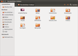
Nautilus¶
Nautilus ist der Standard der Desktop-Umgebung GNOME und damit von Ubuntu. Nautilus will den Umgang mit Dateien leicht machen. Er bietet Vorschauen für diverse Dateitypen, kann Webseiten darstellen und besitzt ein umfangreiches Kontextmenü. Man bezeichnet Nautilus daher auch als grafische Shell. Er lässt sich durch zusätzliche Skripte leicht erweitern.
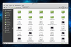
Nemo¶
Nemo ist ein Dateimanager, der als Abspaltung (Fork) von Nautilus 3.4 entstanden ist und der Standard-Dateimanager der Desktop-Umgebung Cinnamon. Nemo bietet viele Funktionen an, die ab Nautilus 3.6 verloren gegangen sind. Das Programm ist erst ab Ubuntu 13.04 in den offiziellen Paketquellen enthalten.
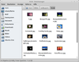
Thunar¶
Thunar ist der Standard der Desktop-Umgebung Xfce, der Nautilus äußerlich ähnelt, jedoch nicht so schwergewichtig ist. Er beschränkt sich auf die wesentlichen Funktionen eines Dateimanagers, bietet aber z.B. mit vielfältigen Möglichkeiten zum Umbenennen von Dateien und benutzerdefinierten Aktionen nützliche Komfortmerkmale.
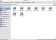
PCMan File Manager¶
Der PCMan File Manager ist eine zentrale Komponente der Desktop-Umgebung LXDE. Ähnlich wie bei Firefox kann man mehrere Ordner in Tabs öffnen. So kann man in verschiedenen Ordnern schnell und übersichtlich arbeiten. Da das Programm nicht viele Ressourcen braucht, ist es auch auf einem älteren Rechner schnell geladen. Es bietet Unterstützung für "Drag&Drop", Vorschauen und Lesezeichen sowie zahlreiche andere Funktionen.
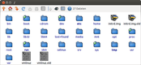
Rox-Filer¶
Rox-Filer ist ein Dateimanager, der einfach zu bedienen ist und den man sehr gut eigenen Wünschen anpassen kann. Um den Rox-Filer kann man sich eine eigene Desktop-Umgebung bauen. So wurde Rox-Filer früher von Xfce als Dateimanager genutzt.
SpaceFM¶
SpaceFM ist ein leichtgewichtiger, vielseitig anpassbarer und erweiterungsfähiger Dateimanager. Er ist in C geschrieben und unterstützt GTK+, udev sowie inotify. Er ist intuitiv zu bedienen und kann für komplexe Aufgaben genutzt werden, da Funktionen der Bash integriert werden können. Das Programm ist ein Fork einer frühen Version von PCManFM.
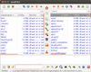
emelFM2¶
emelFM2 ist ein Dateimanager für Linux/Unix-Systeme. Das Programm benutzt ein einfaches und bewährtes Konzept ähnlich dem des Norton Commanders: das Programmfenster ist in drei Teile unterteilt. Zwei davon zeigen den Inhalt des jeweiligen Ordners an, eines zeigt die Ausgabe von Befehlen, die innerhalb des Programms ausgeführt werden.
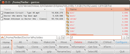
Gentoo¶
Gentoo  (nicht Gentoo Linux) ist ein Dateimanager, der Directory Opus des ehemaligen Betriebssystems AmigaOS als historisches Vorbild hat. Das Programm kann über das folgende Paket installiert werden [1]:
(nicht Gentoo Linux) ist ein Dateimanager, der Directory Opus des ehemaligen Betriebssystems AmigaOS als historisches Vorbild hat. Das Programm kann über das folgende Paket installiert werden [1]:
gentoo (universe)
 mit apturl
mit apturl
Paketliste zum Kopieren:
sudo apt-get install gentoo
sudo aptitude install gentoo
Leider ist die Version aus den Paketquellen nicht immer aktuell. Wer die neueste Version verwenden will, muss das Programm unter Umständen selbst aus dem Quelltext erstellen.
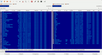
GNOME Commander¶
GNOME Commander ist ein Dateimanager für GNOME in der Art des Norton bzw. Midnight Commanders. Das Programm besitzt wie diese beiden Programme eine zweigeteilte Fensteransicht. GNOME Commander kann über das folgende Paket installiert werden [1]:
gnome-commander (universe)
mit apturl
Paketliste zum Kopieren:
sudo apt-get install gnome-commander
sudo aptitude install gnome-commander
Leider ist es nicht möglich, im GNOME Commander MIME-Typen Programmen direkt zuzuordnen. Um z.B. HTML-Dateien im Browser Chromium per Mausklick aus dem GNOME Commander öffnen zu können, muss man die folgende Zeile nachtragen:
[Default Applications] application/x-extension-html=chromium-browser.desktop;
Siehe auch GNOME Commander Dokumentation .
Hinweis:
sudo apt-get install libgnomevfs2-extra ermöglicht SMB-Zugriff.
Tux Commander¶
Obwohl der Tux Commander auf den ersten Blick wie eine Kopie des GNOME Commanders aussieht, ist er noch einfacher gestrickt. Als lokaler Dateimanager gut, aber nützliche Extras wie Netzwerkunterstützung (SMB, SSH, FTP, WebDAV usw.) sind weder vorhanden noch geplant. Zur Installation wird folgendes Paket benötigt:
tuxcmd (universe)
mit apturl
Paketliste zum Kopieren:
sudo apt-get install tuxcmd
sudo aptitude install tuxcmd
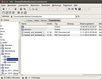
XFE¶
XFE ist ein grafischer Dateimanager, der seit 2002 von Roland Baudin entwickelt wird und besonders durch einen extrem niedrigen Ressourcenverbrauch glänzt. Das Hauptziel der Entwicklung beruht nach Aussagen des Entwicklers auf Leichtgewichtigkeit und extremer Ressourcenschonung für die Nutzung unter schlanken Desktopoberflächen oder älterer Hardware, ferner auf Vermeidung von Abhängigkeiten, so dass der Dateimanager auch aus dem Terminal in Bruchteilen von Sekunden gestartet werden können soll.
KDE¶
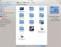
Dolphin¶
Dolphin ist der neue Standard unter KDE und Kubuntu. Das Programm ist schlank, schnell und besitzt alle wichtigen Funktionen eines Dateimanagers inkl. einer Zwei-Fenster-Ansicht. Dolphin wurde speziell unter dem Gesichtspunkt der Benutzerfreundlichkeit entwickelt.
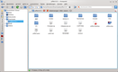
Konqueror¶
Konqueror ist unter anderem auch ein Dateimanager. Das Programm ist essentieller Bestandteil von KDE. Neben der Funktion als Dateimanager kann Konqueror Webseiten darstellen, verschiedene Medienformate darstellen usw. Alles in allem ist Konqueror das "Schweizer Taschenmesser" unter den Dateimanagern. Konqueror war bis einschließlich Feisty Fawn 7.04 der Standard von Kubuntu und wurde danach von Dolphin abgelöst. Ab KDE 4 verwendet Konqueror intern Dolphin für das Dateimanagement.
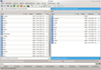
Krusader¶
Krusader ist einer der umfangreichsten Norton-Commander-Klone unter Linux. Man kann ihn in eine Reihe mit Total Commander  stellen. Wie üblich ist das Fenster des Programms zweigeteilt. In jeder Seite können jedoch weitere Tabs geöffnet werden, so dass der Umgang mit verschiedenen Verzeichnissen leicht fällt.
stellen. Wie üblich ist das Fenster des Programms zweigeteilt. In jeder Seite können jedoch weitere Tabs geöffnet werden, so dass der Umgang mit verschiedenen Verzeichnissen leicht fällt.
qtfm¶
qtfm ist hier nicht ganz richtig einsortiert, da es als reines Qt-Programm nicht von KDE abhängt. So kann es ohne die ansonsten erforderlichen KDE-Bibliotheken unter einer beliebigen Desktop-Umgebung eingesetzt werden. Über die Projektseite wird ein Fremdpaket (nur 32-Bit!) zur Verfügung gestellt.
Hinweis!
Fremdpakete können das System gefährden.
MATE¶
Der Standard-Dateimanager der Desktop-Umgebung MATE heißt Caja. Dabei handelt es sich um eine Abspaltung und Weiterentwicklung der Nautilus-Version 2.32. Inwieweit das Programm mit anderen Desktop-Umgebungen harmoniert, ist derzeit unbekannt.
Plattformunabhängig¶
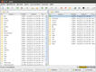
muCommander¶
muCommander ist ein schlanker auf Java basierender Dateimanager im "Norton Commander"-Stil. muCommander kann mit gepackten Dateien umgehen, Verzeichnisse über FTP, SFTP, SMB, NFS, HTTP, Amazon S3, Hadoop HDFS und Avahi (Bonjour) öffnen, mit Lesezeichen arbeiten und umfangreich an die eigenen Bedürfnisse angepasst werden.
Das Programm ist nicht in den Paketquellen von Ubuntu enthalten. Bei Interesse kann man ein Fremdpaket von der Homepage herunterladen, entpacken und starten.
Hinweis!
Zusätzliche Fremdquellen können das System gefährden.
Alternativ kann auch die folgende Fremdquelle hinzugefügt[5] werden:
deb http://apt.mucommander.com stable main non-free contrib
Um die Fremdquelle zu authentifizieren, kann man
entweder den Signierungsschlüssel herunterladen  und in der Paketverwaltung hinzufügen oder folgenden Befehl ausführen:
und in der Paketverwaltung hinzufügen oder folgenden Befehl ausführen:
wget -q http://apt.mucommander.com/apt.key -O- | sudo apt-key add -
mucommander (Fremdquelle)
mit apturl
Paketliste zum Kopieren:
sudo apt-get install mucommander
sudo aptitude install mucommander
Double Commander¶
Cross-Plattform Open Source Dateimanager, siehe Double Commander Homepage . Bietet unter anderem Zwei-Fenster-Ansicht, Tabs, Multi-Rename, Flat-View.
Kommandozeile¶
Auch für die Kommandozeile gibt es eine Reihe von Dateimanagern. Eine Übersicht liefert Shell/Anwendungen.
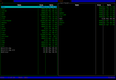
Last File Manager¶
Last File Manager ist ein auf den Curses-Programmbibliotheken basierender Dateimanager.
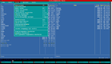
Midnight Commander¶
Der Midnight Commander ist ein Klon des Norton Commanders. Das Programm ist sehr hilfreich zur Auflistung, Umsortierung, Dateisuche, Dateianzeige und vielem mehr. Ursprünglich besaß der Midnight Commander eine grafische Oberfläche und war der erste Dateimanager der Desktop-Umgebung GNOME. Nachdem man jedoch auf Nautilus umgesattelt hatte, wurden die grafischen Funktionen wieder entfernt.
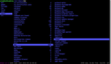
Ranger¶
Ranger bietet eine 3-spaltige Ansicht, bei der die mittlere Spalte das aktuelle Verzeichnis zeigt, die linke das übergeordnete und die rechte Spalte eine Vorschau auf die gewählte Datei. Das Programm unterstützt ebenfalls Tabs und wird über VIM-ähnliche Tastenkürzel gesteuert.
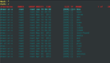
VFU File Manager¶
VFU ist wie der Midnight Commander ein Dateimanager für die Kommandozeile. Das Programm kann über die Paketverwaltung mit dem folgenden Paket installiert werden [1]:
vfu (universe)
mit apturl
Paketliste zum Kopieren:
sudo apt-get install vfu
sudo aptitude install vfu
Danach kann man das Programm in einem Terminalfenster [2] starten:
vfu
Sonstige¶
GNOME Activity Journal¶
Das GNOME Activity Journal ist kein Dateimanager im eigentlichen Sinne, sondern vielmehr eine grafische Benutzeroberfläche für Zeitgeist, das ab Ubuntu 11.04 alle Benutzeraktivitäten an Dateien protokolliert.
Zeitgeist Activity Log Manager¶
Wie das GNOME Activity Journal ist der Zeitgeist Activity Log Manager eine grafische Benutzeroberfläche für Zeitgeist.
Ändern des Standard-Dateimanagers¶
Prinzipiell sollte der Benutzer selbst entscheiden können, welcher Dateimanager bevorzugt eingesetzt werden soll. Allerdings gibt es in der Praxis immer wieder Probleme, den Standard-Dateimanager zu ersetzen. Das hängt u.a. damit zusammen, dass die Programme Nautilus, Thunar und PCManFM innerhalb ihrer Desktop-Umgebungen intern auch zur Verwaltung des Desktops (auch wenn diese Funktion in Nautilus teilweise abgeschaltet ist) und zur Verwaltung von Wechseldatenträgern eingesetzt werden.
Darüber hinaus können benutzerdefinierte Einstellungen (siehe z.B. MIME-Typ) eine Umstellung teilweise verhindern. Das soll niemanden abhalten, den Standard-Dateimanager umzustellen, erklärt aber, warum dieser Vorgang in der Regel nicht mit wenigen Mausklicks möglich ist.
Experten-Info:
Bitte den ehemaligen Standard-Dateimanager aus den oben genannten Gründen nicht deinstallieren.
Allgemein¶
Diese Vorgehensweise sollte auf jedem Ubuntu funktionieren. Man sucht unter /usr/share/applications nach der .desktop-Datei des Dateimanagers der Wahl (z.B. nemo.desktop). Nun öffnet man im Verzeichnis ~/.local/share/applications die Datei mimeapps.list und fügt am Ende folgende Zeilen hinzu:
inode/directory=nemo.desktop x-directory/normal=nemo.desktop
Dabei ist nemo.desktop durch den Namen der vorher gefundenen .desktop-Datei zu ersetzen.
GNOME¶
Möchte man anstelle von Nautilus einen anderen Dateimanager benutzen, so müssen zwei Dateien editiert werden, um den gewünschten Dateimanager festzulegen. Beispielhaft wird nun erläutert, wie man Dolphin zum Standard-Dateimanager macht.
Man öffnet die Datei [3] /usr/share/applications/nautilus-computer.desktop mit Root-Rechten [4] und ersetzt die Zeile:
Exec=nautilus --no-desktop computer:
durch
Exec=dolphin
Nun die Datei /usr/share/applications/nautilus-folder-handler.desktop mit Root-Rechten öffnen und folgende Zeile
Exec=nautilus --no-desktop %U
durch
Exec=dolphin
ersetzen. Öffnet man nun einen Ordner, wird er standardmäßig mit Dolphin dargestellt.
KDE¶
Um den Dateimanager unter KDE zu ändern, gibt es einen eigenen Menüpunkt in den KDE-Systemeinstellungen.
Xfce¶
Die Desktop-Umgebung Xfce bietet erst ab Version 4.8 bzw. Xubuntu 11.04 eine Möglichkeit, den Standard-Dateimanager zu konfigurieren. Unter älteren Ubuntu-Versionen ist es aber mit Hilfe eines kleinen Tricks dennoch möglich.
LXDE¶
LXDE bietet über die Panel-Einstellungen die Möglichkeit, den Dateimanager zu wechseln. Alternativ hilft folgender Tipp weiter.
Problembehebung¶
auf den Papierkorb von Root zugreifen¶
Will man auf den Papierkorb von root zugreifen, sollte man den jeweiligen Dateimanager zusätzlich über D-Bus starten:
gksudo dbus-launch DATEIMANAGER
bzw. für Kubuntu:
kdesudo dbus-launch DATEIMANAGER
- Erstellt mit Inyoka
-
 2004 – 2017 ubuntuusers.de • Einige Rechte vorbehalten
2004 – 2017 ubuntuusers.de • Einige Rechte vorbehalten
Lizenz • Kontakt • Datenschutz • Impressum • Serverstatus -
Serverhousing gespendet von